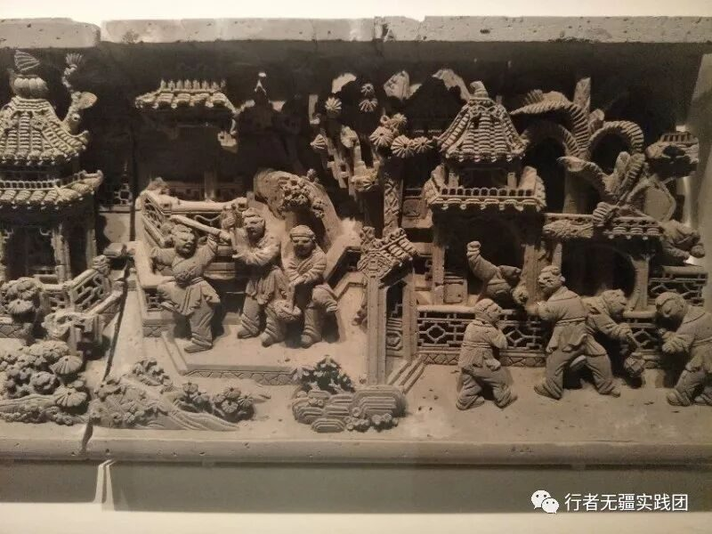
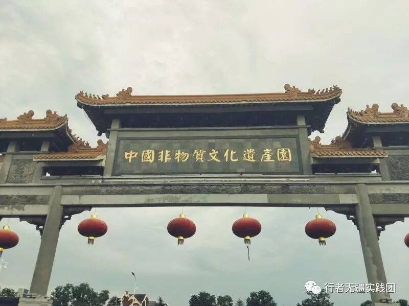
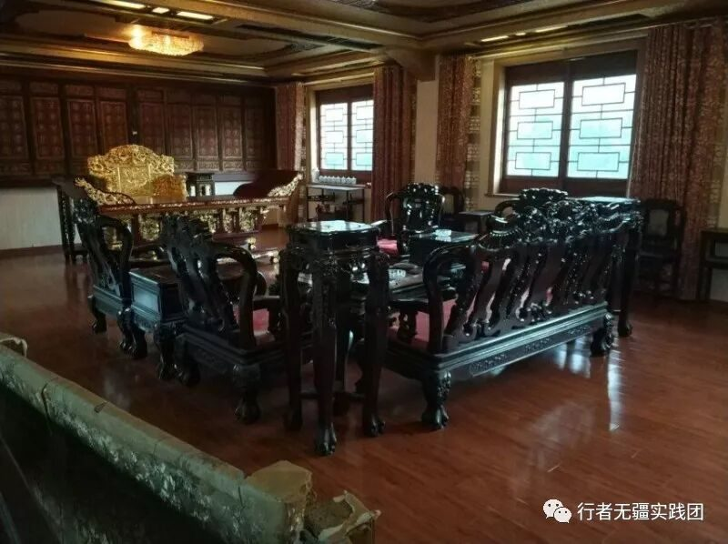
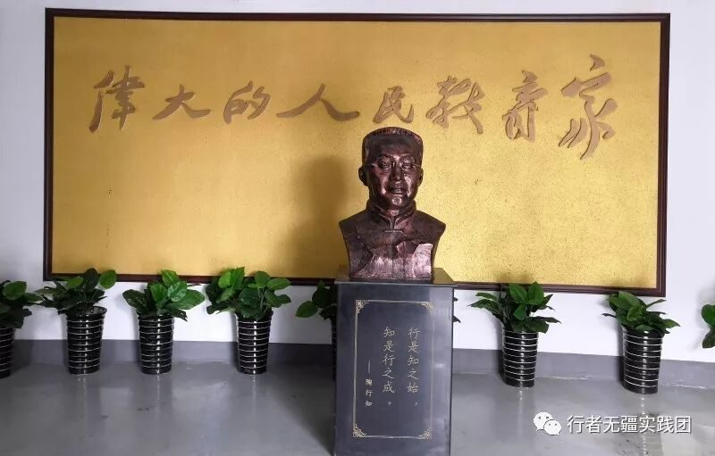
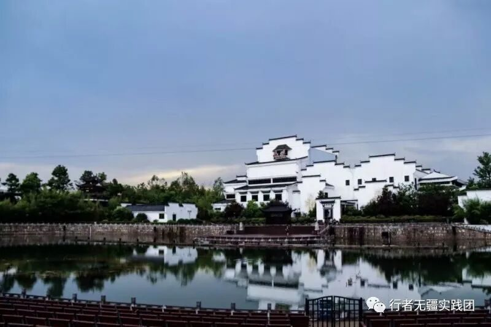

【行者无疆·拾遗皖徽】 近非遗园，入佳境终有所得

近非遗园，大雨忽至，瓢泼无情，此为初行考验，然俱风雨无阻，奋然前行，故览胜景，入佳境，终有所得。

独怜幽草涧边生，上有黄鹂深树鸣。春潮带雨晚来急，野渡无人舟自横。大雨初歇，满园尽是翡翠如新，滴答滴答的雨声就像是徽州建筑传出的亘古回音。葳蕤的盛夏风光掩映在白瓦红墙之间，雨过之后，更为浓郁。幽幽之境笼罩下的非遗文物愈加古朴厚重，整个非遗园似位老者，蓦然守护，寂静呼吸。

木雕馆可谓古色古香，三层小楼，气势恢宏。展馆整体为回廊式，走廊中间围有江南独具的园林风景，细雨蒙蒙之中甚是好看。每个房间，不论是屋内的器具还是屋外的窗户围栏，均是花纹各异的精美木雕；镂空木窗上每种图案都代表着不同寓意，徽州木雕技艺着实令人叹为观止。
”

陶行知馆的前厅略显空旷，墙正中摆放着一尊陶老立像。立像上方寥寥数语为陶老名言，这便是前厅的全部；但绕过那面墙，后庭挂满了有关陶老的生平事迹与人物画像，缓缓走览，细细阅读，轻易便融入氛围，受益良多。
两尊清朝镇宅兽哮天犬近门而立，威风霸气，十二生肖陶俑形态各异。凤凰，福寿，龙首，舞女，上至贵族崇拜，下至民俗风情。砖雕拥有青铜器搬的色泽，却多了一份平实朴素；砖雕拥有石雕那样的精致，却少了那份的浑然天成。砖雕更像是一种民俗，触手可及，且平易近人。
”

石器，铁器上皆布满了斑驳的泥土，不知在这些泥土之中，是否掺杂着古代劳动人民的汗水。五千年的农耕文明，一点一滴皆凭借着这些看似简陋而又笨重的农耕器具啊，而这些器具，却是徽州人民祖祖辈辈的智慧结晶。可歌可泣。
听着渐起的屋檐滴下的雨滴，踏着温润古旧的青石板，拂起小径旁垂下的芭蕉叶。也许此园些许简陋，有些场景心感痛惜，更觉遗产之保护亦长路漫漫，然行走其间，不虚此行。
图片丨行者无疆实践团
文字丨李心悦 徐信步 杨宇晴
责编丨邓子孚 应雨珊
审核丨潘雯雯
者无疆实践团
QQ：2758025831

随行者一起认识世界
长按二维码关注